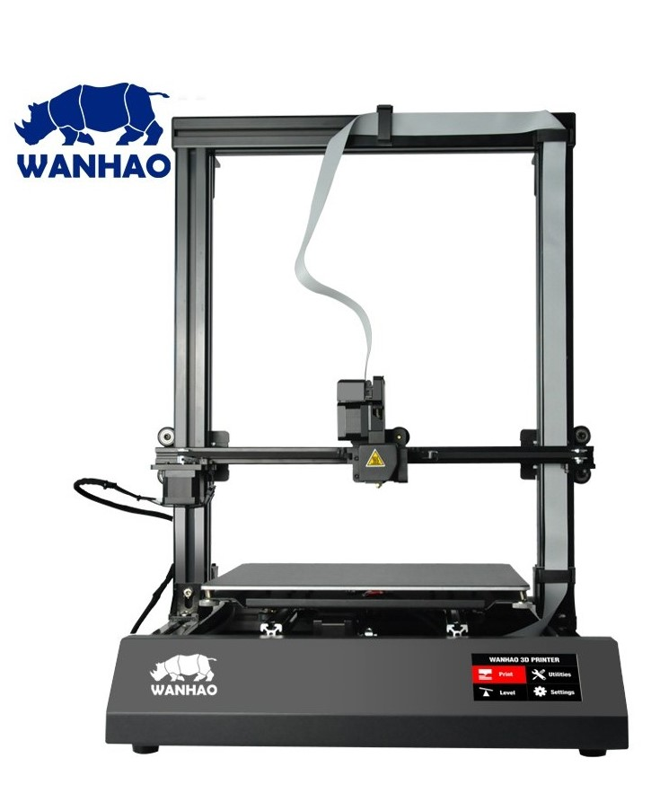
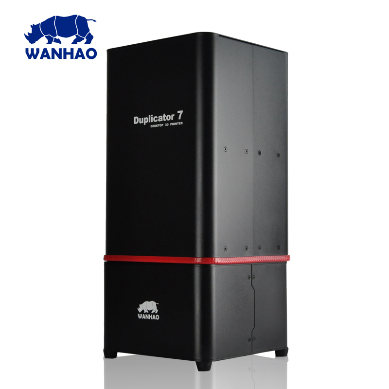
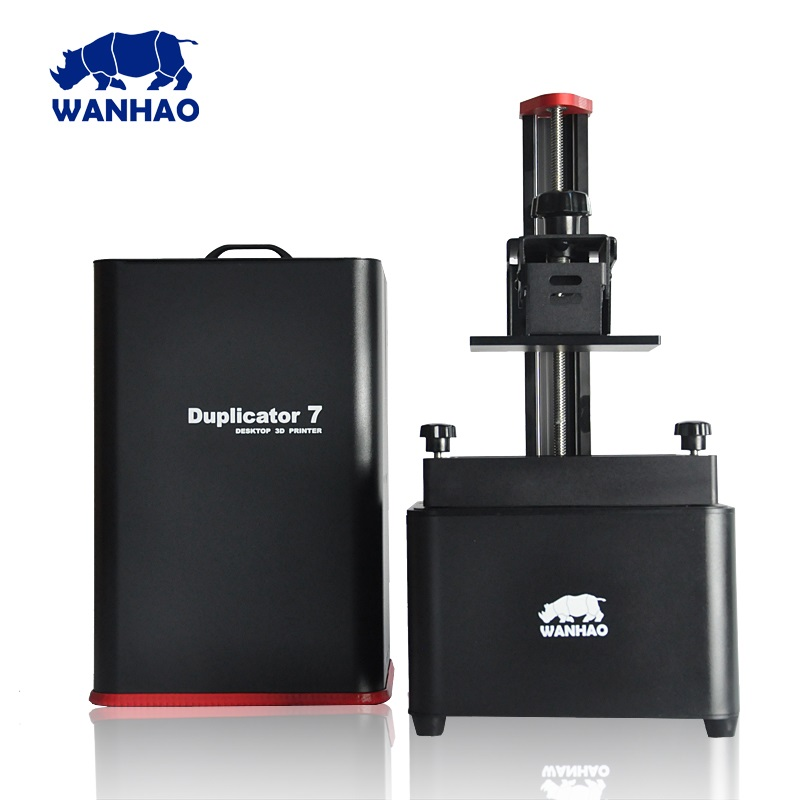

About
The D9 is the first in the new D9 series from Wanhao. This comes with new features such as anti-backlash rolling system, single cable extruder connection and a touch screen display. Unique Features – Anti-Backlash Rolling System
– Pause/Resume Print Function
– Machined Metal Stability Brackets
– Smart Integrated Touch Display
– Closed PSU & Cable Alignments
|  |  |
| Specs | Value |
|---|---|
| Nozzle Diameter | 0.4mm |
| Nozzle Type | MK10 |
| Print area | 300 x 300 x 400 mm |
| Heated-Bed Max Temperature | 110°C |
| Hot-End Max Temperature | 260°C |
| Print Speed (Stable) | 50mm/s |
| Print Speed (Max) | 80mm/s |
| Layer Thickness | 50-350 μm |
| Filament Diameter | 1.75mm |
| Extruder Style | Direct Drive |
| Power Supply | 12V 350W |
| Printer Footprint | 350 x 500 x 600 mm |
user manual
Currently no Duplicator 9 plus manual available